通过 SSH 连接远程使用 Notebook¶
本教程演示如何通过 SSH 连接远程使用 Notebook。
获取连接方式¶
为了使用 SSH 连接到 Notebook，您首先要获取 SSH 的用户名（Username）、主机地址（Host）和端口（Port）。其中主机地址和端口需要从控制台获取。下文中我们会用 <Host> 代表获取的主机地址，<Port> 代表使用的端口。
信息
标准 Notebook 镜像的默认用户是 t9kuser，其主目录（home directory）是 /t9k/mnt。
通过 t9k-pf 命令行工具获取连接方式¶
t9k-pf 命令行工具的功能类似于 kubectl port-forward，可以让您在本地通过端口转发的方式获取 Notebook 的 SSH 连接方式。
准备 t9k-pf 命令行工具¶
首先您需要参照 t9k-pf 安装教程完成命令行工具的安装。
然后您需要参照 t9k-pf 身份认证和授权教程，通过 API Key 来完成相应的身份认证和授权。
通过 URL 获取 Notebook 的 SSH 连接方式¶
您可以通过 Notebook 在浏览器地址栏中的地址来获取其 SSH 连接方式，例如下面我们打开了目标 Notebook 的一个 .ipynb 文件。
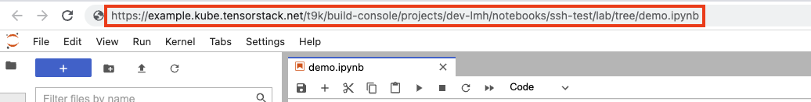
在浏览器中复制红框中的内容，然后在命令行中输入 t9k-pf notebook （或者 t9k-pf nb）并粘贴所复制的内容，便可开启 port-forward。
t9k-pf notebook <tensorstack-host>/t9k/build-console/projects/demo/notebooks/demo-notebook/lab/tree/demo.ipynb
输入以上命令后，命令行会随机返回一个本地端口。例如 127.0.0.1:57873，那么获取的 <Host> 便为 127.0.0.1, <Port> 便为 57873，然后您便可参照 SSH 远程连接教程与目标 Notebook 建立 SSH 连接。
除了上述图中的例子，输入以下地址、或者其他不同结尾的地址也都能起到相同的作用：
<tensorstack-host>/t9k/build-console/projects/demo/notebooks/demo-notebook/tree?
<tensorstack-host>/t9k/build-console/projects/demo/notebooks/demo-notebook/lab
<tensorstack-host>/t9k/build-console/projects/demo/notebooks/demo-notebook/<any-url>
您还可以通过下述格式指定您的本地端口，其中 <URL> 代表地址栏的地址，<LocalPort> 代表您指定的端口号：
t9k-pf notebook <URL> <LocalPort>
注意
小于 1024 的端口需要管理员权限才可以绑定。
例如输入：
t9k-pf notebook <tensorstack-host>/t9k/build-console/projects/demo/notebooks/demo-notebook/lab/tree/demo.ipynb 3333
命令行会打印出 127.0.0.1:3333，即 <Port> 被指定为 3333。然后同样参照 SSH 远程连接教程与目标 Notebook 建立 SSH 连接。
注意
在 port-forward 成功后，您仍然需要保持 t9k-pf 命令行窗口一直保持运行状态。
SSH 远程连接¶
使用 Terminal¶
在 Terminal 中运行以下命令以连接到 Notebook：
ssh t9kuser@<Host> -p <Port> \
-o StrictHostKeyChecking=no \
-o GlobalKnownHostsFile=/dev/null \
-o UserKnownHostsFile=/dev/null
信息
Notebook 的 Pod 没有固定的主机密钥（Host Key），上面的命令设置 StrictHostKeyChecking=no 来跳过主机密钥的检查，并设置 GlobalKnownHostsFile=/dev/null 和 UserKnownHostsFile=/dev/null 以避免将主机密钥保存到 known_hosts 文件中。运行上面的命令时会提示 Warning: Permanently added '[<Host>]:<Port>' (RSA) to the list of known hosts.，但实际上保存的路径为 /dev/null，它会丢弃一切写入的数据。
然后在 Terminal 中操作 Notebook：
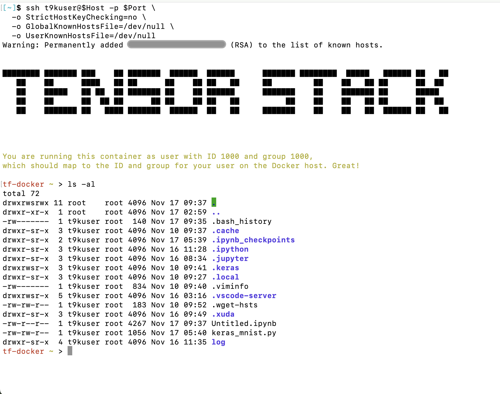
使用 VSCode¶
安装 Remote SSH 插件¶
在 VSCode 中搜索 Remote - SSH 插件并安装：
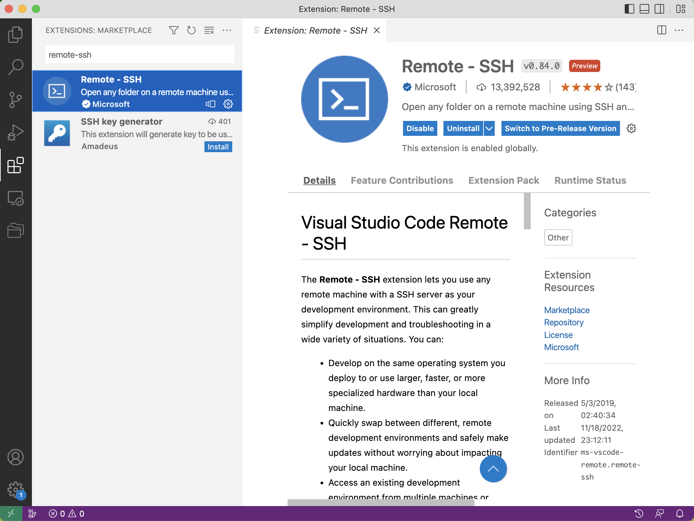
添加 SSH Config¶
安装完成后，需要在 SSH Config 中添加主机（Notebook）的信息。
提示
如果您熟悉 SSH，直接编辑位于 $HOME/.ssh/config 的配置文件，添加以下信息：
Host <Host>
HostName <Host>
User t9kuser
Port <Port>
确认无误后，保存文件即可。
VSCode 提供了编辑 SSH Config 的方式。点击左下角的绿色 >< 符号，选择 Connect to Host，然后拉动滚动条到最下方，点击 Add New SSH Host：
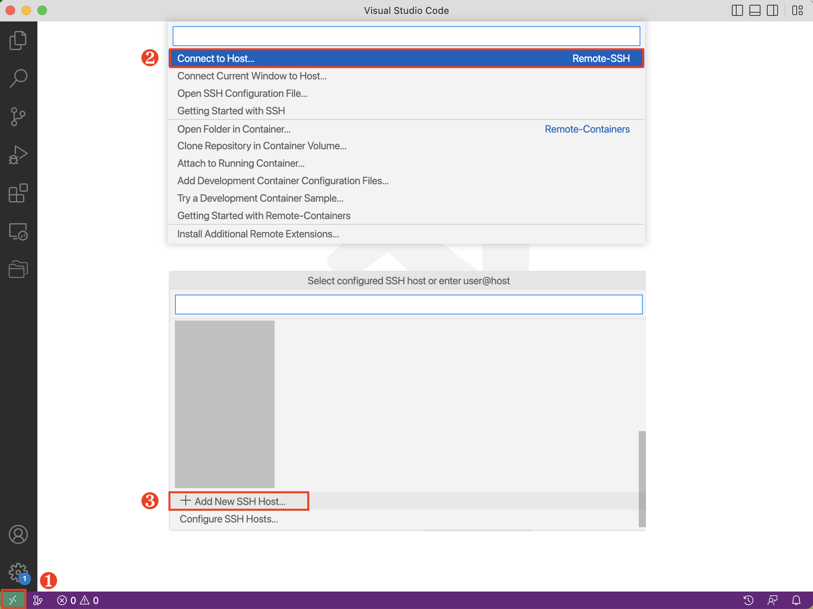
根据提示，输入以下内容，然后按下回车键（Enter）：
ssh t9kuser@<Host> -p <Port>
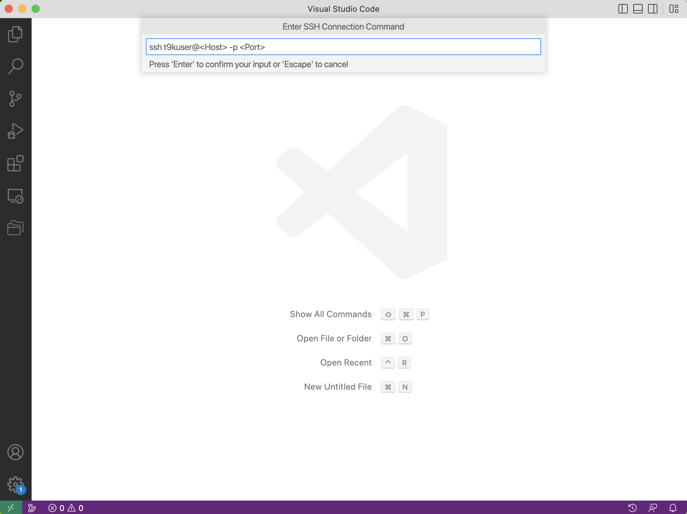
VSCode 会提示 Select SSH configuration file to update，第一个选择项通常是位于 $HOME/.ssh/config 的配置文件，您可以选择将主机的信息存储在第一个配置文件中。
连接到 Notebook¶
点击左下角的绿色 >< 符号，选择 Connect to Host：
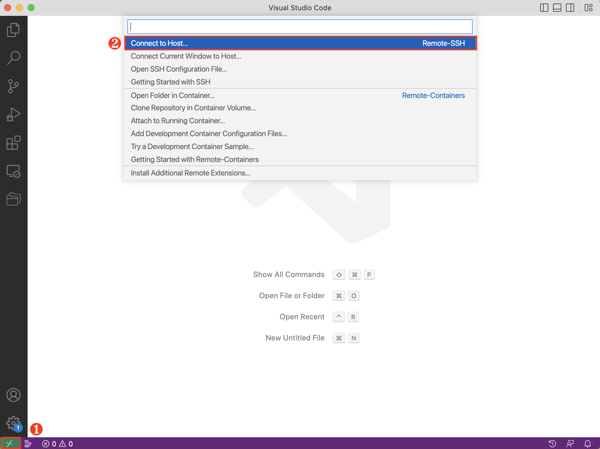
然后选择 SSH Config 中对应的主机名：
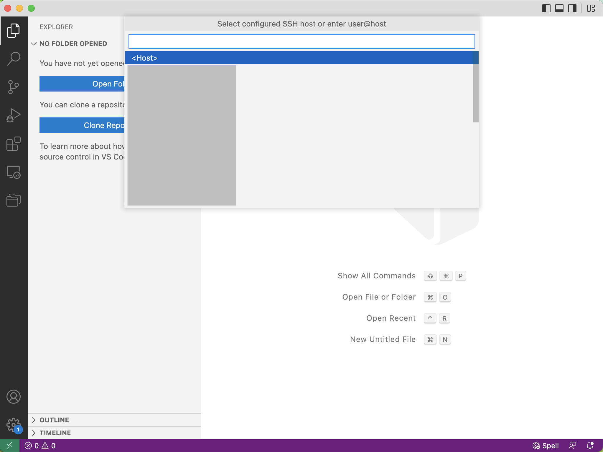
VSCode 会新建一个窗口，等待连接建立之后，左下角会提示 SSH: Host。点击 Open Folder 可以选择打开的目录或者文件。您可以和本地开发一样使用 VSCode 来操作 Notebook：
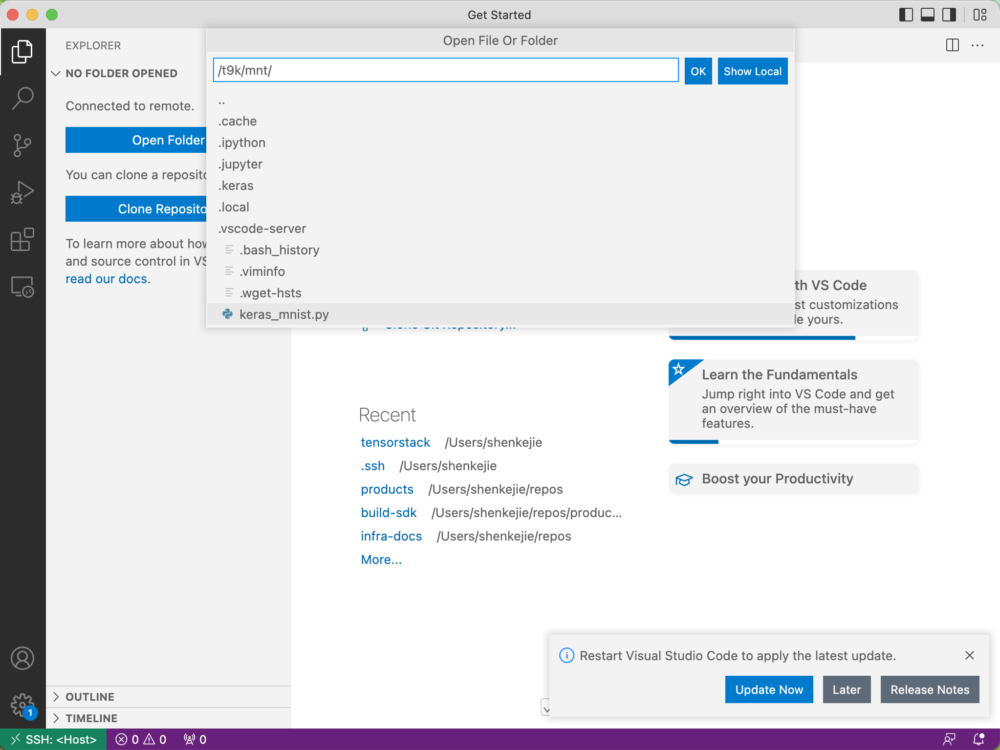
使用 PyCharm¶
使用 PyCharm 远程连接到 Notebook 需要满足以下前提条件：
- 安装了 PyCharm 专业版，且版本不低于 2022.2。PyCharm 有专业版（Professional）和社区版（Community），目前仅 PyCharm Professional 支持远程 SSH 开发。
- Notebook 的资源配置至少为 3 个 CPU，3 GiB 内存，Notebook 绑定的持久卷至少有 2.5 GiB 的可用空间。推荐配置为至少 4 个 CPU，4 GiB 内存，5 GiB 持久卷。
信息
使用 PyCharm 远程连接 Notebook 进行开发时，PyCharm 需要在 Notebook 容器中安装并运行一个 IDE Backend（参阅官方文档）。结合官方推荐的配置和实际测试，我们给出了上面的资源配置要求。
打开 PyCharm，在左侧的导航菜单中点击 Remote Development > SSH，然后点击右侧的 New Connection：
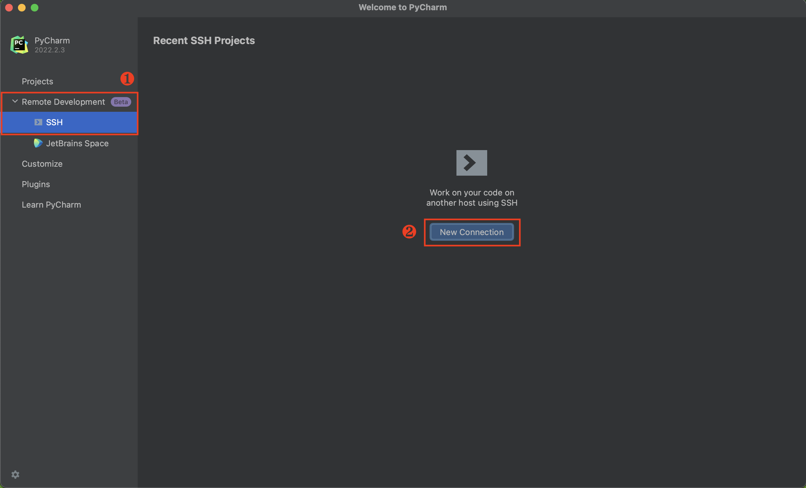
在弹出的对话框中填写如下参数：
Username：SSH 使用的用户名。Host：主机地址。Port：端口。Specify private key：建议勾选，并选择与您存储的公钥对应的私钥。
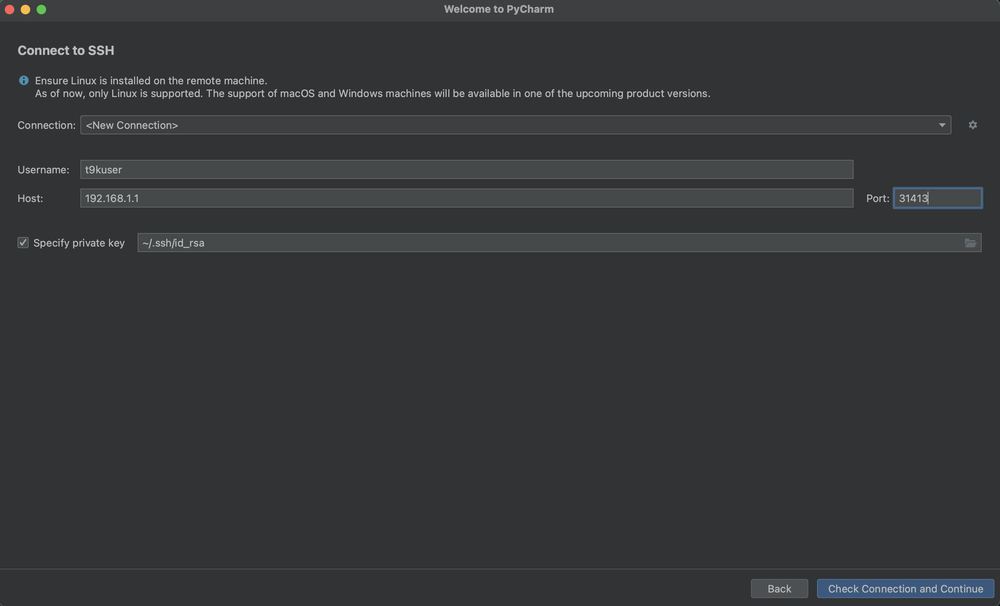
点击 Check Connection and Continue，进入下一步：
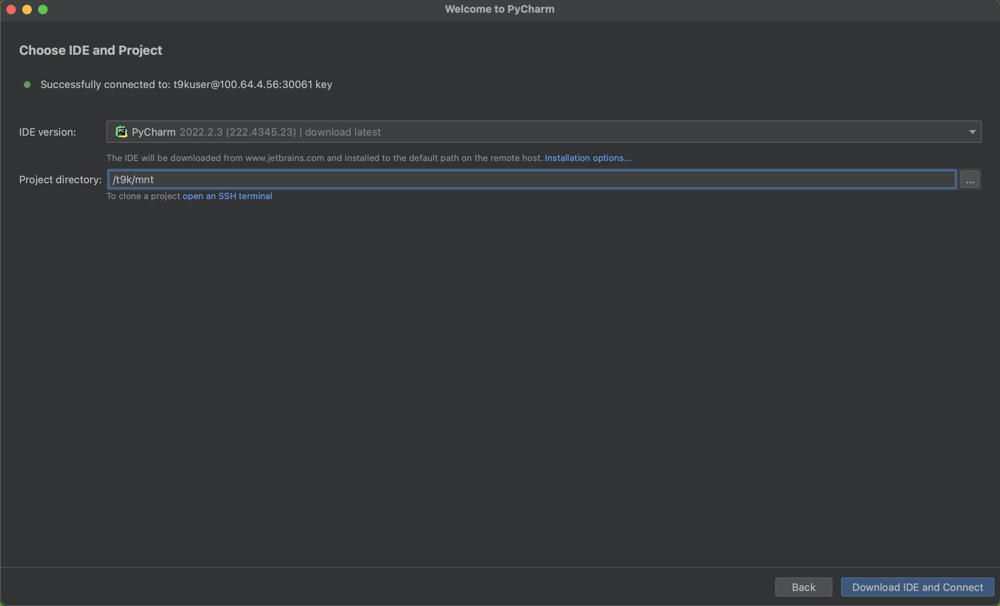
这里选择了在 Notebook 中安装的 IDE Backend 版本为 PyCharm 2022.2.3，远程打开的项目目录为 /t9k/mnt。点击 Download IDE and Connect 后，就可以通过 PyCharm 访问 Notebook 中的文件了。
注意
第一次 SSH 连接到 Notebook 中时，需要等待 Notebook 下载 IDE Backend。根据网络情况不同，这一步骤可能耗时几分钟到十几分钟。
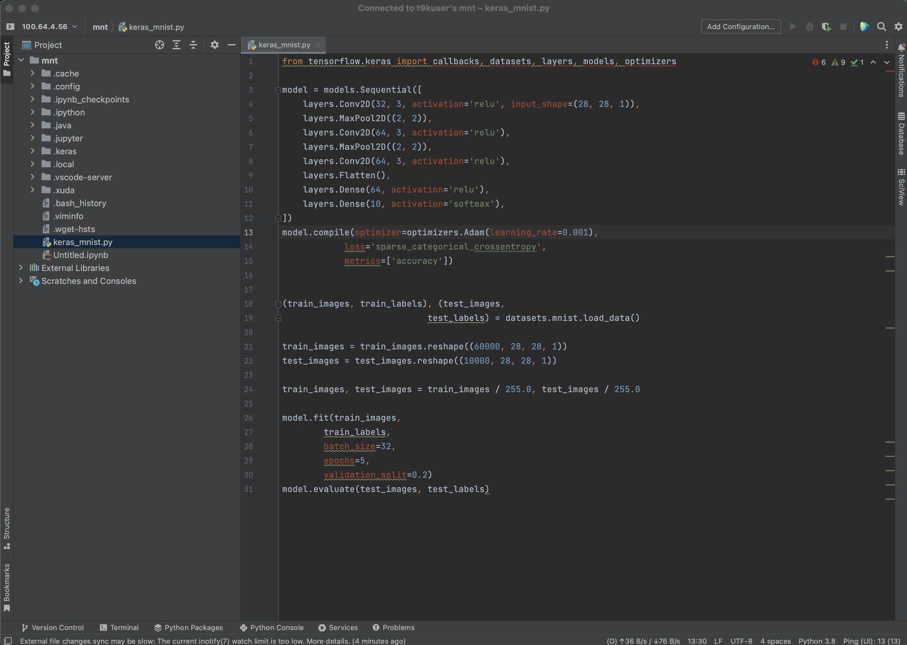
您可以和本地开发一样使用 PyCharm 来操作 Notebook：